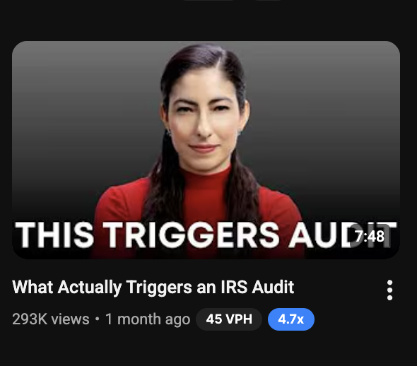
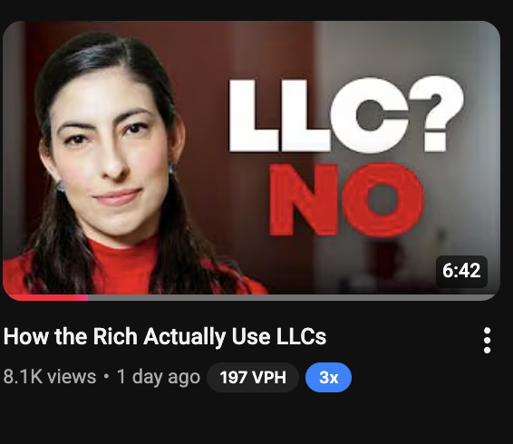
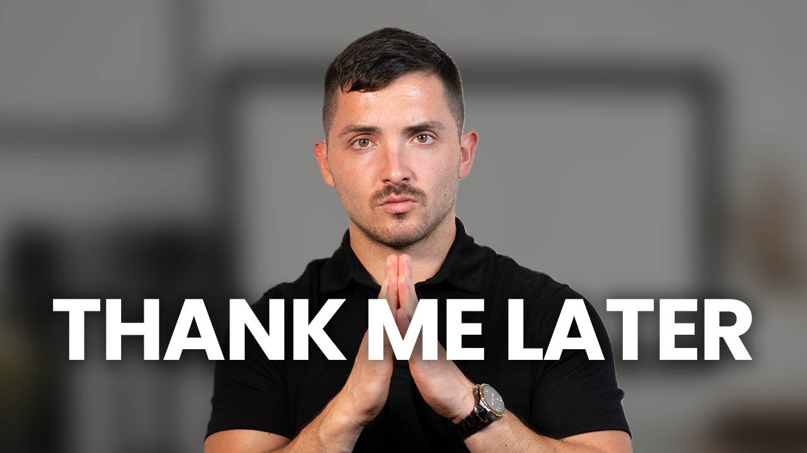
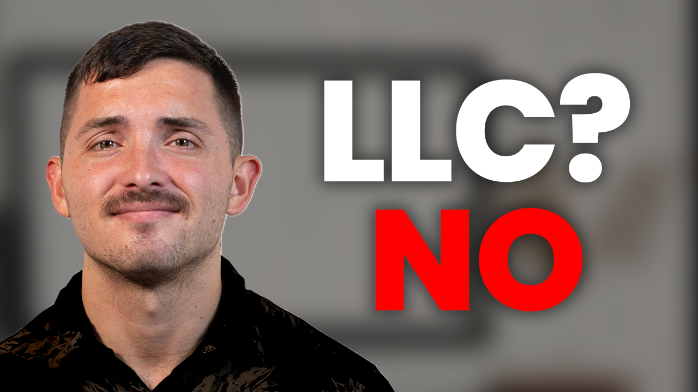
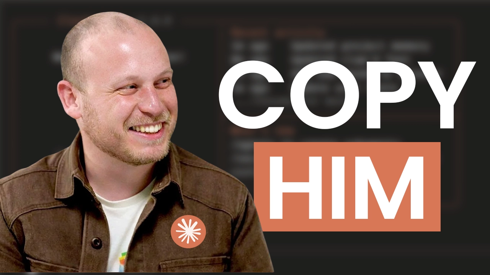
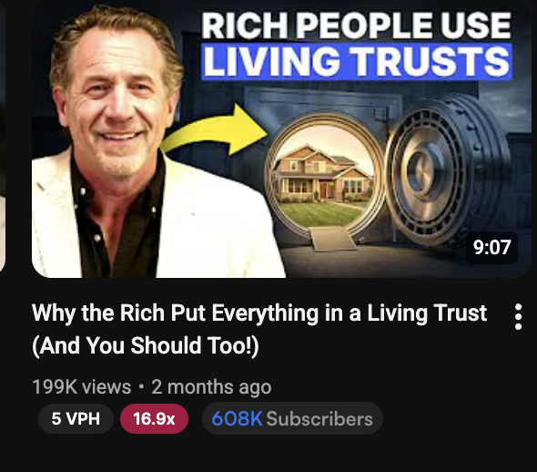
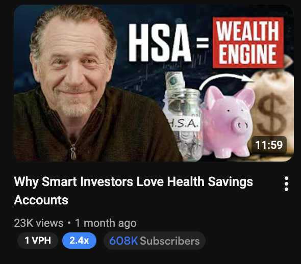

YouTube Video Packaging Report
Priceless CPA // Round 1 Long-Form Content
Prepared March 31, 2026
5 Video Concepts // Content Ideas Pipeline
Executive Summary
This report covers the five YouTube long-form video concepts currently in the Content Ideas column of Priceless CPA's content board. Each concept was developed by analyzing competitor outlier videos, identifying the psychological triggers that made them perform, and adapting those patterns for Priceless CPA's brand.
How These Ideas Were Developed
- Outlier Research - High-performing videos from Karlton Dennis, Mark J Kohler, LYFE Accounting, and others that significantly outperformed their channel average
- Pattern Matching - Identifying psychological triggers: curiosity gaps, specific numbers, celebrity anchors, fear/aspiration framing
- Priceless CPA Adaptation - Custom thumbnail POCs designed for Anthony's brand while leveraging proven patterns
| # | Our Video Title | Core Hook |
|---|
| 1 | How the Rich Actually Avoid IRS Audits | Insider knowledge / fear |
| 2 | How to Write Off Your House (Legally) | Desire / practical how-to |
| 3 | How Elon Musk ACTUALLY Avoids Taxes | Celebrity curiosity gap |
| 4 | How the Rich Become Poor | Contrarian / fear of loss |
| 5 | Why Smart Investors Do This After Filing Their Taxes | Identity / FOMO |
Video 1
Our Packaging
How the Rich Actually Avoid IRS Audits
Priceless CPA
0 views // Just now
Alternate Thumbnail POC
Outlier Research (competitor videos that inspired this)


Why This Works
- "The rich" framing triggers aspirational curiosity. Target audience ($250K-$2M business owners) wants to know what wealthier people do differently.
- IRS audit fear is the highest-anxiety topic in tax. This title promises relief.
- "Actually" implies the viewer has been told the wrong thing, creating a knowledge gap.
- "One Key Step" text overlay creates additional curiosity with a single actionable takeaway.
Thumbnail Notes: Two POC directions. V1 uses "one key step" callout. V2 uses clean split layout. Both feature Anthony with confident posture.
Video 2
Our Packaging
How to Write Off Your House (Legally)
Priceless CPA
0 views // Just now
Alternate Thumbnail POC
Outlier Research (competitor video that inspired this)
Why This Works
- "Write off your house" is one of the most searched tax topics. It promises massive savings on something they already own.
- "(Legally)" does double duty: calms compliance fears AND implies most people think this is illegal, creating a forbidden-knowledge gap.
- Home office deductions are relevant to nearly every entrepreneur, especially post-COVID.
- Proven outlier pattern. The competitor reference shows strong performance on this exact framing.
- Targets the ideal client: someone with a business, a home, and enough income to benefit from strategic deductions.
Packaging Pattern: "How to [desirable thing] (qualifier)" is a battle-tested YouTube format. The parenthetical creates trust while the main title creates desire.
Video 3
Our Packaging
How Elon Musk ACTUALLY Avoids Taxes
Priceless CPA
0 views // Just now
Alternate Thumbnail POCs


Outlier Research (competitor videos that inspired this)


Why This Works
- Celebrity name = instant click magnet. Elon Musk pulls in both tax-interested and general-interest audiences.
- "ACTUALLY" (all caps) signals the real story, not the mainstream version. Strong curiosity gap.
- Aspirational framing. Viewers want to believe they can apply similar strategies. Builds Anthony's authority.
- Proven virality. Celebrity + taxes is a reliable formula across competitor channels.
- Natural funnel: viewers come for Elon, stay for tax education, become clients.
Thumbnail Notes: Elon imagery with bold text. Dark/dramatic palette conveys "insider information" energy. Multiple POC directions explored.
Video 4
Our Packaging
How the Rich Become Poor
Priceless CPA
0 views // Just now
Earlier Thumbnail Draft (archived)
Outlier Research (competitor video that inspired this)
Why This Works
- Contrarian hook. Most finance content tells you how to get rich. Flipping it is pattern-breaking and grabs attention.
- Loss aversion is more powerful than gain. Business owners fear losing what they built more than they desire more.
- Stat-driven thumbnail ("51% do this") adds credibility and specificity.
- Positions Priceless CPA as a protector of wealth, not just a tax filer.
- Addresses the unspoken fear: "Could I lose it all?"
Thumbnail Revisions Needed: Make Anthony bigger, full screen. Bottom text 1 line ("51% do this"). Less yellow, more blue. Remove logos.
Video 5
Our Packaging
Why Smart Investors Do This After Filing Their Taxes
Priceless CPA
0 views // Just now
Alt titles: "Why Smart Investors Immediately Do This After Filing Their Taxes" / "Why the Rich Immediately Do This After Filing Their Taxes"
Alternate Thumbnail POC
Outlier Research (competitor videos that inspired this)


Why This Works
- Identity-based framing ("smart investors") makes the viewer self-select. If they consider themselves smart, they HAVE to click.
- "After filing" targets a specific, timely moment. Perfect for seasonal content post-tax-season.
- Open curiosity loop. "Do This" without revealing what "this" is forces the click.
- Post-filing content gap. Most creators cover deductions and filing. Very few cover what happens AFTER.
- Positioned for Q2 seasonal relevance (April-June).
Thumbnail Revisions Needed: Make Anthony more structured. All-black shirt. Move over slightly for rule of thirds.
Packaging Strategy Overview
Why This Round Works for Priceless CPA
1. Emotional Range
The batch balances fear (IRS audits, rich becoming poor), desire (house write-off, celebrity strategies), and identity (smart investors). Variety prevents the channel from becoming one-note.
2. Proven Outlier Patterns
Every concept is reverse-engineered from videos that outperformed channel averages. Not guesswork. Competitors analyzed: Karlton Dennis, Mark J Kohler, Jasmine DiLucci, LYFE Accounting, Navia, and Dave Ramsey.
3. Audience Alignment
These titles hit Priceless CPA's ideal client ($250K-$2M business owners) across their full identity:
- They own homes (house write-off) / fear audits (IRS avoidance)
- They aspire to wealthy outcomes (Elon, "the rich")
- They identify as smart (smart investors) / worry about protecting wealth (rich become poor)
4. Thumbnail Design Principles
- Anthony as the face - personal brand recognition and trust
- Bold, minimal text - 3-5 words max
- High contrast - blues, blacks, accent pops
- Rule of thirds - professional layout that stands out in browse
Recommended Filming Order
| Priority | Video | Rationale |
|---|
| 1 | How Elon Musk ACTUALLY Avoids Taxes | Highest viral potential. Best for channel growth. |
| 2 | How to Write Off Your House (Legally) | Evergreen search volume. Consistent views over time. |
| 3 | How the Rich Actually Avoid IRS Audits | Fear-based content converts well. Builds subscriber trust. |
| 4 | How the Rich Become Poor | Contrarian angle differentiates. High share potential. |
| 5 | Why Smart Investors Do This After Filing | Best timed for post-tax-season (Q2). Hold for seasonal release. |
Priceless CPA YouTube Packaging Report // Round 1 // March 2026